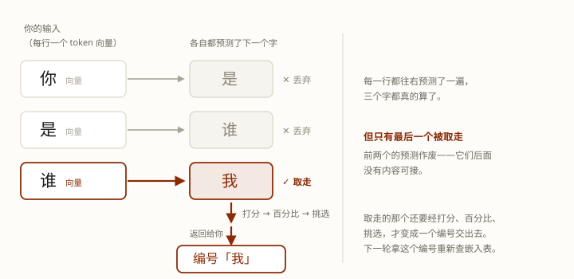

同一条流水线，两种完全相反的跑法：prefill 与 decode。
同样是跟模型打交道：让它读一篇长文档，几秒钟就"看完"了；让它写一篇同样长的文章，慢得让人想砸键盘。
更怪的是——读长文档明明是更多的字，为什么反而快？
拆穿了很简单：模型跑的始终是同一条流水线，但"跑法"分两段。第一段一次能跑一大批字，第二段一次只能跑一个字。
学完这课，你能：说清这两段各在干嘛、为什么要这么分；判断一个请求是"读长文型"还是"写长文型"，谁更慢、谁更贵；并且能回答"为什么首字等了很久、后面却唰唰地出"。
第一轮跑这条流水线 ＝ prefill（预填充）；后面每一轮 ＝ decode（解码）。
本课所有结论（谁快谁贵、TTFT、TPOT）都从这一句推出来。
第 1 课我们完整走过一遍，这里只把最关键的一行复述一下：
文字 → token 编号 →（查表）→ 向量
→ 穿过 N 层（每层都是：注意力 → 残差 → FFN → 残差）
→ 打分 → 采样（挑一个）→ 下一个字记住三件事就够了：
上面那条链，是「跑一趟」的配方。第 1 课当时只关心一趟怎么走完——走完，一个字就出来了。
可一次请求，要把这条流水线跑很多趟。而且——第一趟和后面几趟，跑法不一样：
第一趟，你给的那一整段是一起跑的；后面几趟，每次只补一个新字，前面那批字不再重新处理（它们的 k、v 已经存在显存里，直接拿来用）。
这个差别，就是本课的全部内容。下一节就展开讲。
关键在这儿：这条流水线一次只吐出一个字。所以要写出一整段话，得把它跑很多轮。
你的输入（系统提示 + 历史 + 这一句）
—— 拿「你是谁」→ 回「我是…」举例 ——
│
▼
第 1 轮：把「你」「是」「谁」一起喂进去跑完 → 挑出「我」
│
▼
第 2 轮：只把「我」补进去，再跑一轮 → 挑出「是」
│
▼
第 3 轮：只把「是」补进去，再跑一轮 → 挑出「一」
│
▼
……一直跑到结束（遇到结束符，或到长度上限）第 1 轮：喂进去的是你给的一整段——里面一个模型产的字都没有。而且这些字全是已知的，所以能一起跑。这一轮有个专门的叫法：prefill。
第 2 轮起：只补刚刚挑出来的那一个字。为什么不多补几个？因为再往后的字，得等它先被挑出来，才知道是什么。后面所有轮都叫 decode。
第 1 课我们知道模型内部分很多层，刚才又说吐一个字算一轮。这两个词长得像，意思完全不是一回事。我们把这几个词说清楚，免得以后搞混：
最容易错的一处：一轮 ≠ 一层。一轮 ＝ 把全部层走完；「再走一遍」是第二轮，不是第二层。
一次请求里有 1 次 prefill ＋ 若干次 decode，为什么这么分，下一节就说。
这两段干的事不一样，名字也不一样：
第 1 轮 ＝ prefill（预填充） · 第 2 轮起 ＝ decode（解码）
分界线只有一条：这次喂进去的，是你给的字，还是模型自己刚蹦出来的字。
那为什么第一轮叫「预填充」？得先看注意力那一步在干嘛（每层里都有这么一步）。
每个字都会算出自己的三样东西：q（我要找什么）、k（我是谁）、v（我能提供什么）。
然后拿自己的 q，去跟前面所有字的 k 比一遍；再按比出来的比例，把它们的 v 取过来、汇总。
所以你看：要算任何一个字的注意力，都得用到前面所有字的 k 和 v。那模型就得把它们存起来（存在显存里，正式名字叫 KV cache）。
每个字的注意力都要算，一个都不少——但这一批可以一次算完，不用排队。因为算某个字的 k、v 只用到它自己那一行，谁也不依赖谁。（为什么"看前面"不等于"等前面"？→ 进阶版 Q9；那"一个都不少"是为什么？→ Q10）
于是第 1 轮跑完，有两个产出：摆满 k、v 的货架（货架就是显存——k、v 一算出来就存下来，后面轮次直接取用），和第一个字（也就是这次请求返回给你的、用来回答你问题的那个字）。pre（预先）＋ fill（填充），名字就是这么来的。（可点着一步步走的那张图里，货架就是画成了一排货架。）
其实每一个字，模型都预测了一遍下一个字——「你」预测「是」，「是」预测「谁」，「谁」预测「我」。但只有最后一个字的预测被留下，前面几个的预测全部丢掉，因为只有它后面还接着内容。真正返回给你的，只有从「谁」那儿预测出来的「我」。（每一轮都是这样，不只是第 1 轮。细节见进阶版 Q9）
「返回给你的那个字」只是个方便的说法——严格讲，交到你手上的是编号，不是字。轮与轮之间传的都是编号。下面那张图画的是完整过程。

之后每一轮就轻松了：注意，一轮最后返回的是编号，不是向量。预测出的那根向量先变成十几万个分数、再变成百分比、再挑出一个词表编号返回；下一轮就根据这个编号去查嵌入表，得到一根新向量，只算它这一行的 q、k、v；前面所有字的 k、v 直接从显存取，不用再算。（细节见进阶版 Q8）
一句话：KV cache 省的是"重算"，不是"重读"。——旧的不用重算，但每次还是得把整份读一遍。
算力受限（compute-bound）：卡在"算得不够快"。
显存带宽受限（memory-bandwidth-bound）：卡在"数据搬得不够快"。
prefill 要把你输入的每一个字的 q、k、v 都算出来。这些运算本质上是矩阵乘法，所以一次能算一整批——2 万行就一起算完。这一趟干的活很多，时间都花在"算"上，所以容易算力受限。
decode 每一轮只新算一个字的 q、k、v——前面那些字的 k、v 早算好了存在缓存里，不用重算。
但新字并不是单独走一趟：它要跟前面所有字一起送进模型。经过每一层时，它自己的那一步只占一行，可注意力那一步要读全部前面位置的 k、v（第 3 节那句"跟前面所有字的 k 比一遍"）——读的量覆盖了前面所有行，写的却只有新字那一行，所以容易带宽受限。
而且这份会越攒越多：对话越长，缓存里的 k、v 越多，每一轮要读的也越多——这正好回答"为什么长上下文让每一步都更慢"。不过生产上并不会每次都读全部 k、v，滑动窗口只读最近的一部分，细节见进阶版 Q7。
数据也印证了：decode 时 GPU 的利用率会掉到 20–40%（大部分计算单元在干等数据）；prefill 时能跑到接近满载。（这两个数字来自 Weka 的技术综述，是转引的量级证据，不是原始实测）
因为两段脾气不同，所以你可能会感受到两种不同的"慢"。
TTFT（首字延迟，首字要等多久）＝ Time To First Token。从你按回车，到看见第一个字。它由 prefill 决定——输入越长，等得越久。
TPOT（每 token 耗时，出字有多快）＝ Time Per Output Token。开始输出之后，每个字花多久。它由 decode 决定——这就是你感觉到的"打字速度"。
一条真实的时间线长这样（ClickHouse 实测：3200 字输入、410 字输出）：
① t = 0 你按回车
② t = 0–50ms 网络 ＋ 排队
③ t = 50–400ms prefill：3200 个输入字，一次全算完（顺手把 K/V 填好）
④ t = 400ms 第一个字出来了 ← TTFT ＝ 400ms
⑤ t = 400ms–12.7s decode：每 ~30ms 一个字，一轮一个新字 ← TPOT
⑥ t = 12.7s 第 410 个字，结束 ← 端到端延迟总时间是这么凑出来的：首字等待 ＋（要写的字数 − 1）× 每字耗时。这个例子里就是 400ms ＋ 409 × 30ms ≈ 12.7 秒——TTFT 和 TPOT 看着都正常，全文却要写 12 秒多。所以「慢」要分清是哪一种：开头等太久是 TTFT，出来得慢是 TPOT，答案长只是因为字数多。
TTFT 和 TPOT 不要拿来比谁快。它们量的是两件不同的事：一个量的是"等第一个字"（就一次），一个量的是"之后每多写一个字"（重复很多次）。那个例子里 decode 每 30ms 蹦一个字，其实比 prefill 那一次还快——decode 的问题是每一步都得把攒下的 k、v 整份读回来，所以单步不快；prefill 那一次不用付这笔（k、v 正在被算出来），所以单步很慢但只慢一次。
所以，想快 TTFT，就缩短输入，或者把每次都一样的开头缓存起来；想快 TPOT，就得减少每一步要搬的东西（量化、换更小的模型、换更快的卡）。
ClickHouse 文中给的 TPOT 正常区间大约是 10–50ms，也就是每秒 20–100 个字——出字比人读得快，人就不会感觉到明显的迟滞，这条就算健康。
脚本在工作区：exercises/llm/0002-prefill-vs-decode.py。
python exercises/llm/0002-prefill-vs-decode.pyWindows 终端若中文乱码，先执行 chcp 65001。数字是刻意简化的，重点看相对关系。
我实测的结果：（数字都是相对值，看谁大谁小就够，不用记具体数）
| 场景 | TTFT | 生成耗时 | 总耗时 | 相对成本 |
|---|---|---|---|---|
| 读长文（20k 进 / 50 出） | 1.000 s | 1.001 s | 2.001 s | 20250 |
| 写长文（500 进 / 2000 出） | 0.025 s | 21.499 s | 21.524 s | 10500 |
| agent 一轮 · 无缓存 | 1.000 s | 1.602 s | 2.602 s | 20400 |
| agent 一轮 · 命中前缀缓存 | 0.025 s | 1.602 s | 1.627 s | 2850 |
先看最后两行的对比：命中前缀缓存之后，首字从 1.000s 掉到 0.025s，成本也跟着掉了一大截（20400 → 2850，约 1/7）；可生成耗时一点没变，还是 1.602s。
为什么生成耗时不变？因为输入只要批量算一次，输出一个字就要算一次。缓存省掉的是"把那一大段输入重新算一遍"这笔，而每一个输出字都得自己走一趟 decode——缓存帮不上。所以上了缓存，模型还是保持原来的语速。
模型供应商的输入和输出都按 token 计费，而输出的单价更高。现在你知道为什么了吗？
补充原因：输出一个字和读一个字，供应商花掉的算力差很多——读进来的那一大批可以一起并行算（第 4 节那个 prefill），输出只能一个字一个字来（decode）。所以单价更高。
下表是两家官方价目，2026-10-03 查的。价目会变，用前请回原页核对。（MTok ＝ 100 万 token）
| 供应商 | 模型 | 输入 | 输出 | 输出是输入的几倍 |
|---|---|---|---|---|
| Anthropic | Fable 5.1 | $10 | $50 | 5 倍 |
| Opus 5.5 | $4 | $20 | 5 倍 | |
| Sonnet 5.5 | $2 | $10 | 5 倍 | |
| Haiku 4.5 | $1 | $5 | 5 倍 | |
| DeepSeek | V4.1-Flash（非高峰） | $0.15 | $0.60 | 4 倍 |
| V4-Pro（非高峰） | $0.66 | $1.98 | 3 倍 |
那要省钱，往哪使劲？输入和输出两头办法不一样：
再说一句 agent：它的提示词、工具定义这些都是 agent 框架预先写好的，普通用户改不了，再叠上完整历史和刚拿回来的观察结果，输入天然就是长文；输出通常只有一句"调用某个工具"。所以 agent 基本都是「读多写少」型，缓存正好治它。agent 这块有专门的课，这里就不展开讲啦。
Q1 一次请求内部，通常分成哪两个阶段？
Q2 解码（decode）阶段为什么慢？
Q3 首字延迟（TTFT）主要由哪一段决定？
上面这些够你看懂全貌了。读的过程中如果冒出疑问，点对应的链接就行——不用从头看进阶版。
本课引出：LLM 底层 · 第 3 课 · KV Cache 与「缓存命中」——本课说的"存下 K/V"，那一课讲它什么时候能跨请求复用。
顺着往下：LLM 底层 · 第 4 课 · 一趟装满的卡车（批处理怎么救 decode）——既然 decode 在"等数据"，能不能顺手多干点活？
可点着走一遍：图 · 一次请求，从头到尾
术语表：Prefill · Decode · TTFT · TPOT · 一轮 / 一次请求